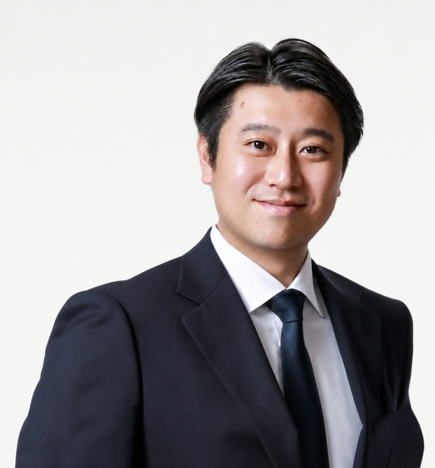

FOR YOUこんな方のための時間です
「始めたいまま、1年たった」
調べるほど選択肢が増えて、動けなくなっている方。
「口座は開いた。それから止まっている」
最初の設定でつまずいて、そのままの方。
「なんとなくで積立額を決めて、ずっと不安」
この金額でいいのか、誰にも確かめられずにいる方。
OUTCOMEこの日、決まること
- どの口座でやるかが決まります。
- 毎月いくら積み立てるかが決まります。
- どんなタイプの商品で始めるかが決まります。
決めるだけで終わりません。 2日目は、設定まで一緒に手を動かします。 （個別銘柄のおすすめはしません。「選び方の軸」を整えて、あなたが選べる状態にします）
HOW IT WORKS進め方（全2回・合計100分）
- お申し込み後「4つの宿題」が届きます。 どれも5〜10分でできる、ざっくりメモで大丈夫です。
- 1日目（40分）＝聞いてもらう日宿題をもとに、じっくりヒアリング。 現在地とゴールを整理して、証券口座の状況もここで確認します。
- 2日目（60分）＝手を動かす日画面を一緒に見ながら、口座や積立の設定を実際に進めます。 迷っていたことが「終わったこと」に変わる日です。
1日目と2日目のあいだは、数日〜1週間ほどあけます。 一晩置いて考える時間も、決めるための大事な材料です。
HOMEWORK「4つの宿題」はこんな内容です
① 収支のざっくり整理
毎月「入ってくるお金」と「出ていくお金」を簡単にメモ。
② いまの貯金額の把握
使っている口座の残高を、ざっくり合計するだけでOK。
③ すでにやっている積立のメモ
iDeCo・企業型DC・つみたてなど。「なし」でも大丈夫です。
④ 老後のざっくり試算
例）月25万円 × 12ヶ月 × 30年 ＝ 9,000万円くらい。 電卓で1回たたいてみるだけで見え方が変わります。
ぜんぶ、ざっくりで大丈夫です。 きれいに作り込む必要はありません。
GUIDEご一緒するのは

fulfull株式会社 代表。 お金のプロとして相談実績2,000件以上。 セミナー累計200回・のべ6,500名以上。 Voicy「ふるふるラジオ」で毎日配信中。 将来の金額を断定したり、不安をあおったりしない進め方を大切にしています。
PRICEご参加費
| あなたの状況 | 参加費 |
|---|---|
| 一般の方 | 19,800円 |
| ユメカネサロン ベーシック会員／fulfullでご契約のある方 | 9,800円 |
| プラチナ会員／ふるふるスクール生 | 無料（特典に含まれます） |
ご自身がどれに当てはまるか分からないときは、そのままお申し込みください。 こちらで確認して、該当のご案内をお送りします。 ベーシック会員（月3,000円）になってからのご参加も選べます。
HOW TO APPLYお申し込み
それだけで大丈夫です。 日程の候補と、あなたに該当するご案内を個別にお返事します。 オンライン（Zoom）で、顔出しはご相談に応じます。
聞いてから決めたいことがあれば、質問だけでも大丈夫です。
FAQよくある質問
オンラインですか？
はい、Zoomで行います。 お申し込み後に参加リンクをお送りします。
知識ゼロでも大丈夫ですか？
大丈夫です。 むしろ「調べる前」のほうが、まっすぐ決められることが多いです。
準備するものはありますか？
お申し込み後に「4つの宿題」をお送りします。 どれも5〜10分でできる、ざっくりメモで大丈夫です。 間に合わなくても、1日目に一緒に整理できます。
支払い方法は？
お申し込み後のご案内でお伝えします。 該当価格の確認が先なので、先にお支払いいただくことはありません。